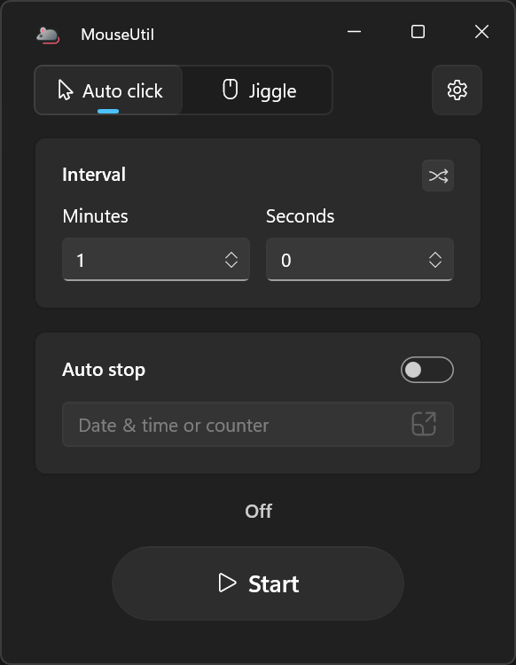
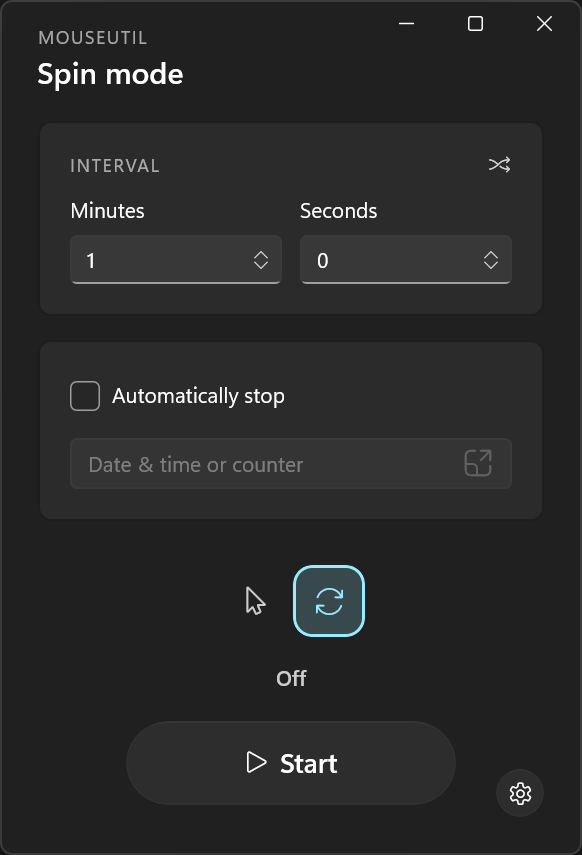
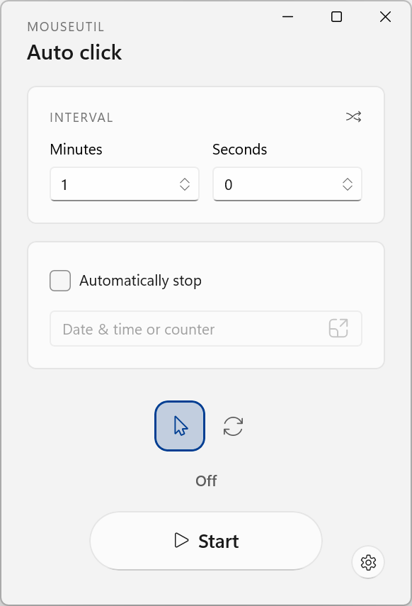
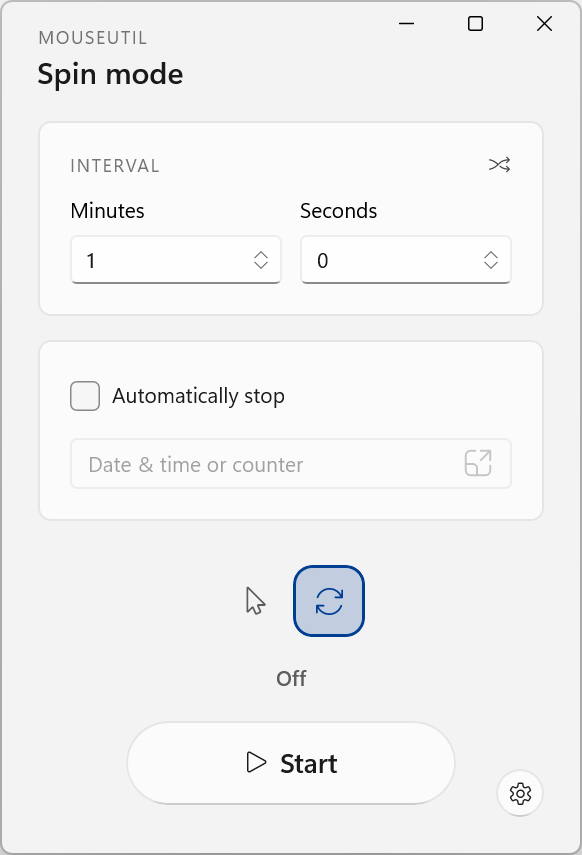
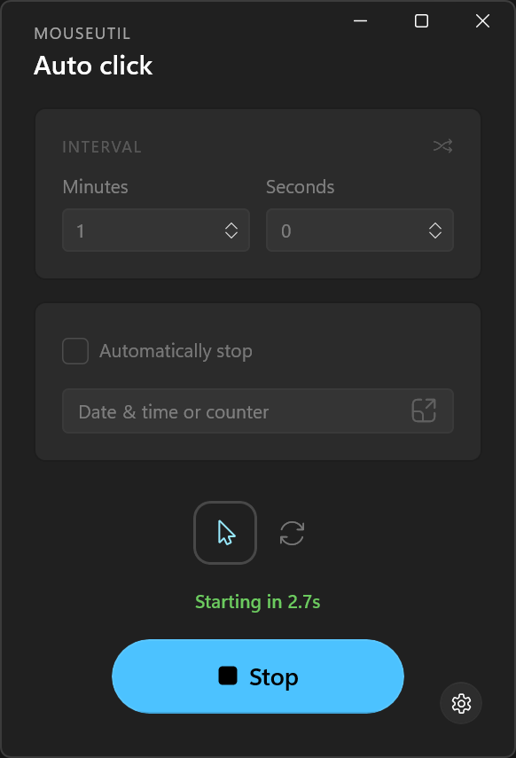
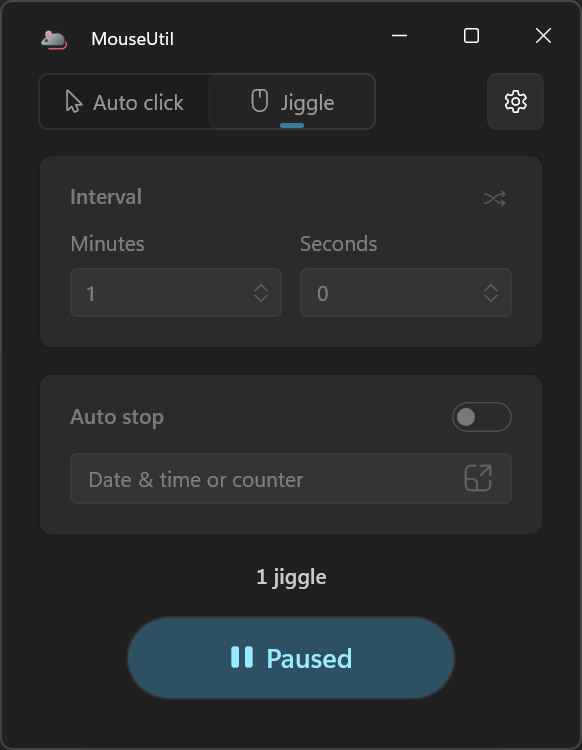
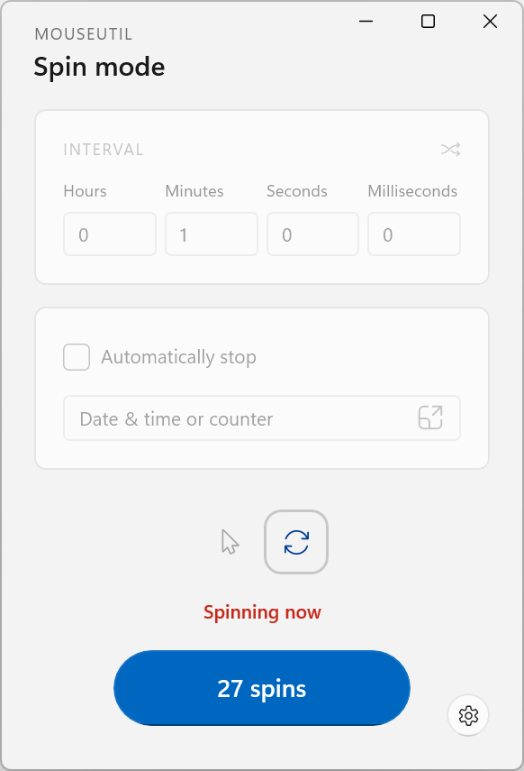
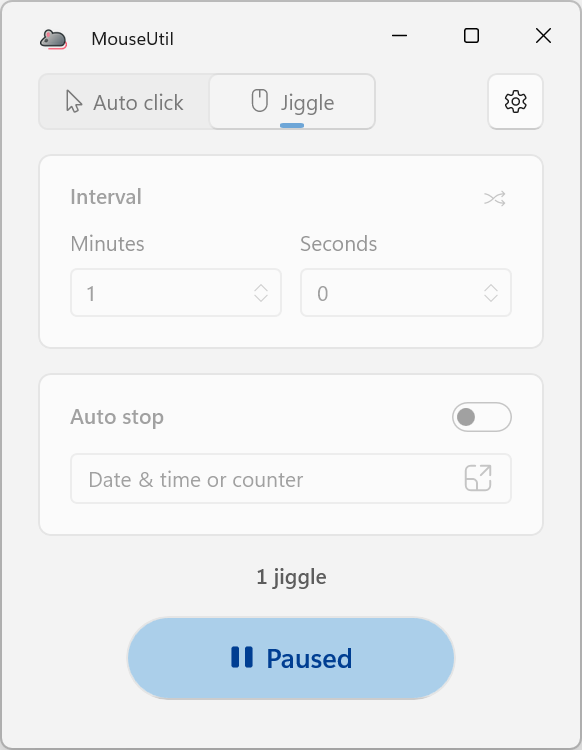

MouseUtil clicks or spins your cursor on a timer, so Windows never marks you idle — through long calls, slow downloads, or AFK stretches.




Sends a real left-click at wherever the cursor currently is without moving it. Great for repetitive clicking tasks, keeping certain applications active, or automating simple interactions.
Sweeps the cursor around a tiny circle and returns it to the exact starting pixel, without clicking. Useful for keeping a machine from going idle.
Automate the click or the movement, set your conditions, and go.
Set the delay between actions.
F6 by default. Start or stop from anywhere with one keypress or key combination.
A running countdown, an action counter, and an optional progress bar on the taskbar icon.
End the run after a set number of actions, or at a specific date and time.
Touch the mouse yourself in Spin mode and it steps aside, resuming on a fresh countdown once you stop.
Optionally close the window instead of quitting, and automation keeps going in the background.




Get MouseUtil for Windows · v1.2.2 · 57.1 MBGet MouseUtil for Windows